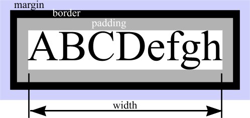
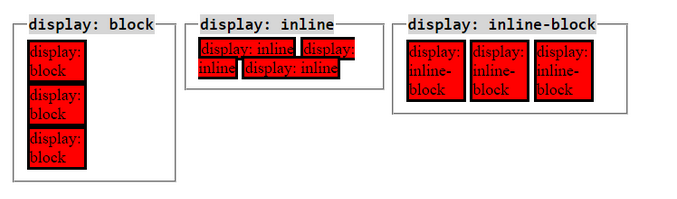

CSS Basic Concepts for newbies
A must read!
May 11,2015
Concepts:
- Compare CSS concepts
- Explain how and when to use CSS concepts
What is the difference between Margin, Border, and Padding?
So if you want to learn positioning with CSS I first recommend to get familiar with the display property. Here is the box model but it is not the typical image with just the names in it. At first I did not understand it but with an actual example like this I did get a feel of it. CSS Box Model for objects:
So every single object that is created has this structure you just saw! In order to work the positioning you need to digest the box model where the Content is where the actual data is. The Padding is the border inside the Content zone. The Border is the acutal outline of the Content so think of this as the " NO trespassing zone". The Margin is the zone that covers the "NO trespassing zone" that we just mentioned so think of it as an extended layer but no content ever hits that zone! Keep that in mind.
What are the best practices associated with using classes vs. ids?
Ok, so you would use a class when you have several objects lets say more than two that need to behave in the same way. So you work with classes and save extra typing because if you want to apply beauty changes to more than two objects you only have to type it in once! and then reference to the class created ofcourse!. Now, working with id's is related. You should by know have a feeling of what is coming up so... yeah you use id's basically when you want to work with specific changes for specific objects instead of a group of objects.
What are the differences between relative, absolute, and fixed positioning?
Ok, so theese are concepts I need to brush up on so check in later to get a glimpse at it! If I am posting something I'd preffer posting knowledge I am certain about to all my readers!
What does it mean to display inline vs inline blocks? Simple.
Inline elements: allow other objects to sit right next to them or before them but there is a thing: width and height is not considered what is considered is margins & paddings
Block elements: simply respect everything (all the properties) and the object takes up the whole line for itself!
Inline-elements: allow other objects to sit right next to them or before them but the thing again: respects width and height, top and bottom margin & paddings but its does not consider left and right margin and paddings.
Example illustration:
Hope this helped!
@devgmtech